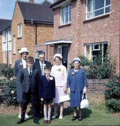
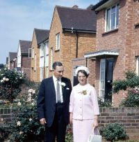
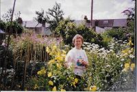

Evelyn Lawrence
1919–2023
Photo Gallery



Overview
Notes.
Marriage and Children
Married Fredrick James Watt 1966.
Known child (or Children):None .
Timeline
Historical Context
Evelyn was born on 3rd October 1919 in Bushey, Watford, Hertfordshire, where she lived with her parents Emily and Walter, and her sister Margaret, who was born in 1922. She lived in Bushey until spring 1925, following an argument between Emily and Walter, where, we suspect, she learnt that he had a wife and family in Connecticut. Emily along with the two girls, herself pregnant, travelled to Windsor. Evelyn recalled travelling into Windsor Central Station, by train, and crossing over the river and Bath Island and seeing buttercups in bloom on the island. In Windsor they moved around quite a lot, from one room to another, close to the town centre. in August 1925 they were living in Alma Cottages, South Place, where her brother Leslie was born. Life was hard, Emily was working, in service, and Evelyn was at school and having to look after the two younger children. There were stories, from Evelyn, that when they were a little older, and during school holidays, she would go with friends around the long walk or over the Brocas, "dragging" the younger children with her, and of her and her friend giving Leslie piggy backs .
Evelyn was a prolific writer, much was written when she was a Sunday School teacher at the Baptist Church in Dedworth, Later she would write about her childhood and the early years in domestic service.
These writings have been transcribed and links to those writings are included here Fred Watts, Early Years and Service Years